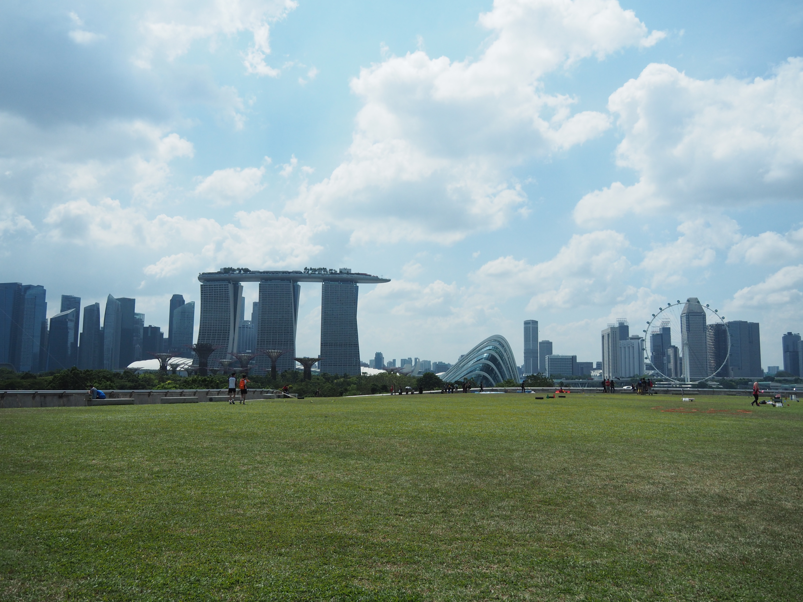

Background Information of Hong Kong and Singapore
 Hong Kong
Hong Kong
According to hkmemory.hk, Hong Kong was full of factories during the 60s and 70s. That was when they continued their development and the expansion of manufacturing that began in the previous decades. At that time, as long you worked hard, you would be rewarded. Therefore, the people in Hong Kong worked hard for living and work-life balance was not emphasised. Since all people thought was to work hard in order to earn their living, no one thought of the importance of free time.
Singapore
Singapore was founded on June 3, 1953, 111 years later than Hong Kong. When Hong Kong was on the manufacture stream during the 60s and 70s, Singapore was a developing city. However, it still underwent a rapid industrialization and maintained exceptionally high growth rates between 1960 to 1990s. Therefore, work-life balance couldn’t be taken seriously at that place either. People had to work hard in order to have high growth rates back then.
Both cities
Both cities are part of the Four Asian Tigers (also known as Four Asian Dragons or Four Little Dragons), which means that their economies are outstanding among other regions in Asia. The cities' economies had grown a lot between 1960 (mid 1950 for Hong Kong) to 1990. As mentioned above, with this huge amount of growth, citizens would have to work hard in order to have this satisfying result. As a result, their resting time, or the 'life' part in work-life balance is a lot less than working time.